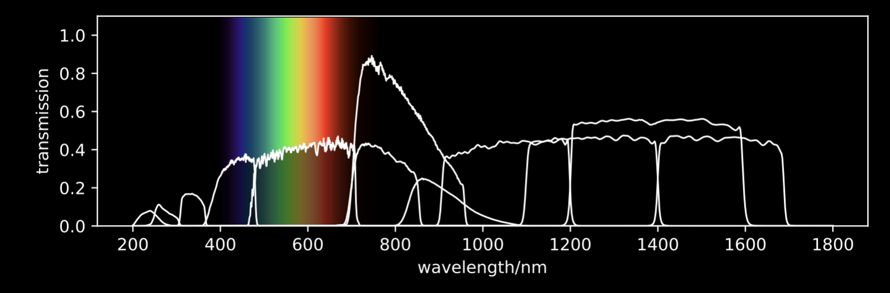

Unlike the cameras in mobile phones cameras attached to telescopes like Hubble only capture the intensity of light, not its colour. To make colour images observatories use filters, devices which selectively transmit light of different wavelengths. Images obtained using 3 or more filters can be mapped to red, green, and blue (RGB) channels and then combined to produce a colour image.

Most modern observatories have many filters they can use. For example, the Hubble Space Telescope has access to a number of filters including several in the UV and near-IR - light which is invisible to the human eye. Because many of the filters Hubble observes with are outside the human visible range the resulting colour images are sometimes called "false colour".
A selection of filters available to Hubble. Hubble is able to observe both the entire visible spectrum and parts of the UV and infrared.
There are a number of reasons why astronomers use different filters to observe objects. The colours of stars can be used to measure the temperature of stars: blue stars are generally hotter while red stars are cooler.
Observations of galaxies - vast collection of stars, black holes, gas, dust, and dark matter - in different filters can reveal what they are made of, including whether they've recently formed stars. Blue galaxies (like the one above) have recently formed a new generation of stars.
While most filters collect light over many different wavelengths some filters only collect light in a very narrow range. The "narrowband" filters are used to cleanly observe emission lines - sharp peaks in the spectra of objects. These emission lines are caused by glowing gas and can often be used to determine the amount of gas present, its composition, or how it was excited. In the image above the red channel actually corresponds to a narrowband image centred on the Hydrogen-alpha emission line. This line is emitted by Hydrogen excited by nearby young stars and provides an robust indication of the amount of recent star formation.
As described above we make colour images by combining images in 3 bands (taken with 3 different filters) mapping one to the red (R), green (G), and blue (B) channels. Because the filers don't exactly correspon to what our eyes see we are free to play around with the relative levels to our own taste.
Begin by selecting an image and then play around with the level in each channel to create a unique colour composite.
Alternatively you can upload any image:
Use the sliders to change the contribution to the colour image from each of the separate channels. You can then click the button to save you own (almost unique) creation. For example, if you like you images to have more of a purple tint, reduce the amount of green.
This app was designed and coded by Stephen Wilkins at the University of Sussex.
Hubble's Legacy was developed and led by Stephen Wilkins at the University of Sussex with assistance from scientists at 10 other UK universities. Hubble's Legacy is also supported by the Science and Technologies Facilities Council.
The full code for the Hubble Legacy project can be downloaded from GitHub here.